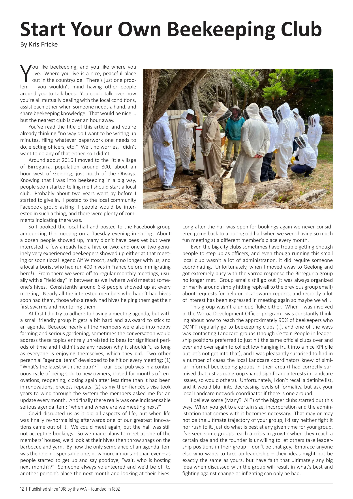

12 | Published since 1918 by the VAA – founded in 1892
Start Your Own Beekeeping Club
By Kris Fricke
Y
ou like beekeeping, and you like where you
live. Where you live is a nice, peaceful place
out in the countryside. There’s just one prob-
lem – you wouldn’t mind having other people
around you to talk bees. You could talk over how
you’re all mutually dealing with the local conditions,
assist each other when someone needs a hand, and
share beekeeping knowledge. That would be nice …
but the nearest club is over an hour away.
You’ve read the title of this article, and you’re
already thinking “no way do I want to be writing up
minutes, filing whatever paperwork one needs to
do, electing officers, etc!” Well, no worries, I didn’t
want to do any of that either, so I didn’t.
Around about 2016 I moved to the little village
of Birregurra, population around 800, about an
hour west of Geelong, just north of the Otways.
Knowing that I was into beekeeping in a big way,
people soon started telling me I should start a local
club. Probably about two years went by before I
started to give in. I posted to the local community
Facebook group asking if people would be inter-
ested in such a thing, and there were plenty of com-
ments indicating there was.
So I booked the local hall and posted to the Facebook group
announcing the meeting on a Tuesday evening in spring. About
a dozen people showed up, many didn’t have bees yet but were
interested; a few already had a hive or two; and one or two genu-
inely very experienced beekeepers showed up either at that meet-
ing or soon (local legend Alf Wittosch, sadly no longer with us, and
a local arborist who had run 400 hives in France before immigrating
here!). From there we were off to regular monthly meetings, usu-
ally with a “field day” in between as well where we’d meet at some-
one’s hives. Consistently around 6-8 people showed up at every
meeting. Nearly all the interested members who hadn’t had hives
soon had them, those who already had hives helping them get their
first swarms and mentoring them.
At first I did try to adhere to having a meeting agenda, but with
a small friendly group it gets a bit hard and awkward to stick to
an agenda. Because nearly all the members were also into hobby
farming and serious gardening, sometimes the conversation would
address these topics entirely unrelated to bees for significant peri-
ods of time and I didn’t see any reason why it shouldn’t, as long
as everyone is enjoying themselves, which they did. Two other
perennial “agenda items” developed to be hit on every meeting: (1)
“What’s the latest with the pub??” – our local pub was in a contin-
uous cycle of being sold to new owners, closed for months of ren-
ovations, reopening, closing again after less time than it had been
in renovations, process repeats; (2) as my then-fiancée’s visa took
years to wind through the system the members asked me for an
update every month. And finally there really was one indispensable
serious agenda item: “when and where are we meeting next?”
Covid disrupted us as it did all aspects of life, but when life
was finally re-normalising afterwards one of our greatest innova-
tions came out of it. We could meet again, but the hall was still
not accepting bookings. So we made plans to meet at one of the
members’ houses, we’d look at their hives then throw snags on the
barbecue and yarn. By now the only semblance of an agenda item
was the one indispensable one, now more important than ever – as
people started to get up and say goodbye, “wait, who is hosting
next month??” Someone always volunteered and we’d be off to
another person’s place the next month and looking at their hives.
Long after the hall was open for bookings again we never consid-
ered going back to a boring old hall when we were having so much
fun meeting at a different member’s place every month.
Even the big city clubs sometimes have trouble getting enough
people to step up as officers, and even though running this small
local club wasn’t a lot of administration, it did require someone
coordinating. Unfortunately, when I moved away to Geelong and
got extremely busy with the varroa response the Birregurra group
no longer met. Group emails still go out (it was always organized
primarily around simply hitting reply-all to the previous group email)
about requests for help or local swarm reports, and recently a lot
of interest has been expressed in meeting again so maybe we will.
This group wasn’t a unique fluke either. When I was involved
in the Varroa Development Officer program I was constantly think-
ing about how to reach the approximately 90% of beekeepers who
DON’T regularly go to beekeeping clubs (!), and one of the ways
was contacting Landcare groups (though Certain People in leader-
ship positions preferred to just hit the same official clubs over and
over and over again to collect low hanging fruit into a nice KPI pile
but let’s not get into that), and I was pleasantly surprised to find in
a number of cases the local Landcare coordinators knew of simi-
lar informal beekeeping groups in their area (I had correctly sur-
mised that just as our group shared significant interests in Landcare
issues, so would others). Unfortunately, I don’t recall a definite list,
and it would blur into decreasing levels of formality, but ask your
local Landcare network coordinator if there is one around.
I believe some (Many? All?) of the bigger clubs started out this
way. When you get to a certain size, incorporation and the admin-
istration that comes with it becomes necessary. That may or may
not be the ultimate trajectory of your group; I’d say neither fight it
nor rush to it, just do what is best at any given time for your group.
I’ve seen some groups reach a crisis in growth when they reach a
certain size and the founder is unwilling to let others take leader-
ship positions in their group – don’t be that guy. Embrace anyone
else who wants to take up leadership – their ideas might not be
exactly the same as yours, but have faith that ultimately any big
idea when discussed with the group will result in what’s best and
fighting against change or infighting can only be bad.